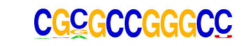

| p-value: | 1e-51 |
| log p-value: | -1.184e+02 |
| Information Content per bp: | 1.921 |
| Number of Target Sequences with motif | 3517.0 |
| Percentage of Target Sequences with motif | 35.11% |
| Number of Background Sequences with motif | 19154.1 |
| Percentage of Background Sequences with motif | 27.66% |
| Average Position of motif in Targets | 93.5 +/- 69.8bp |
| Average Position of motif in Background | 83.7 +/- 139.6bp |
| Strand Bias (log2 ratio + to - strand density) | 10.0 |
| Multiplicity (# of sites on avg that occur together) | 2.64 |
| Motif File: | file (matrix) reverse opposite |
| Rank | Match Score | Redundant Motif | P-value | log P-value | % of Targets | % of Background | Motif file |
| 1 | 0.820 | 1e-47 | -109.369293 | 30.70% | 23.85% | motif file (matrix) | |
| 2 | 0.671 | 1e-45 | -104.061674 | 13.20% | 8.60% | motif file (matrix) | |
| 3 | 0.734 | 1e-45 | -103.969450 | 16.63% | 11.48% | motif file (matrix) | |
| 4 | 0.611 |  | 1e-33 | -76.462917 | 0.63% | 0.05% | motif file (matrix) |
| 5 | 0.809 | 1e-28 | -66.266551 | 19.87% | 15.36% | motif file (matrix) | |
| 6 | 0.629 | 1e-25 | -58.596396 | 0.46% | 0.03% | motif file (matrix) | |
| 7 | 0.695 | 1e-23 | -54.688371 | 2.26% | 0.98% | motif file (matrix) | |
| 8 | 0.653 | 1e-17 | -40.109634 | 2.13% | 1.04% | motif file (matrix) | |
| 9 | 0.672 | 1e-14 | -34.226251 | 0.41% | 0.06% | motif file (matrix) |